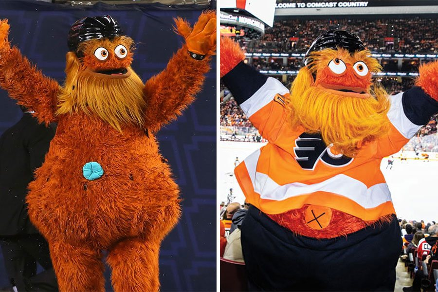

Is all of this talk about belly buttons and bacteria making you hungry? Great! The Improbable Beef company is looking for
bacterial species that have the ability to synthesize proteins which taste like beef. So far, labs have been able to synthesize meat from algea, fungi, and plant root microorganisms.
However, so far, those results have left tasters asking, "Where's the beef (flavor)?" Improbable Beef is hoping that crazy amounts of lint won't be the only thing found in belly buuttons; they
believe that the elusive beef-flavored bacterial species may be hiding in there as well.
As a result, they have gone navel gazing across the world, checking out belly buttons of countless volunteers to see if anyone happens to have beefy belly button bacteria. In order
to assist on their quest, this website takes information from those studies and displays it in various tables and charts. When the user selects the Test Subject ID from the dropdown menu, a table below displays
demographic information including ethnicity, gender, age, location, etc. It also shows three customized charts for the selected subject. A standard horizontal bar chart shows their top 10 bacterial cultures, a
bubble chart displays the same information (plus that of less common bacteria) in a more visual form, and a gauge chart shows how often they (claim to) wash their belly button.